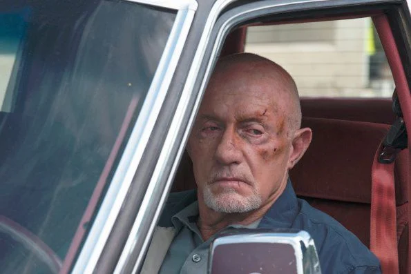
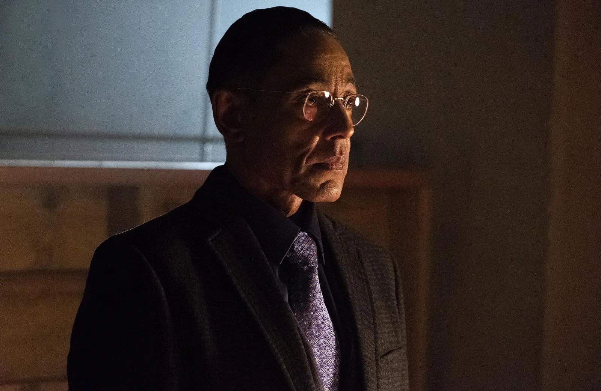
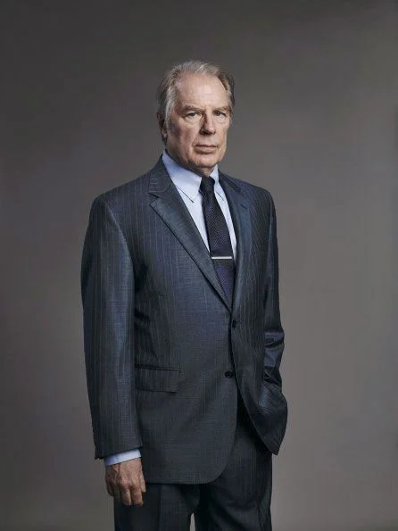
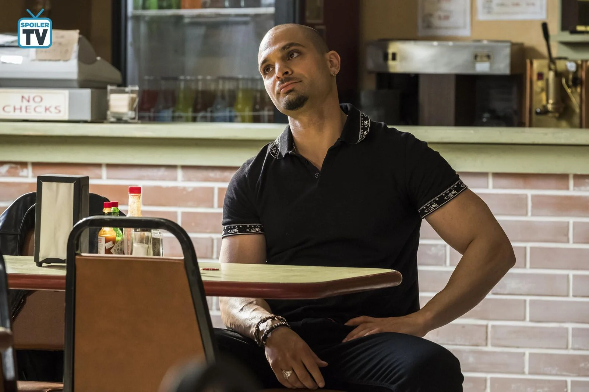
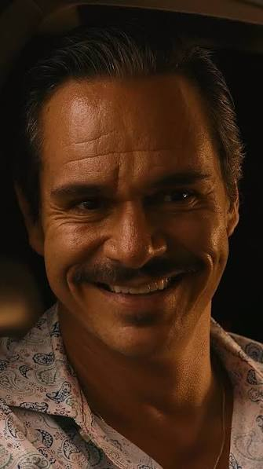

INICIO / PERSONAJES
FICHAS PERSONALESPersonajes
Personajes principales de la serie. Da vuelta la carta para ver el expediente y ver más detalles.
Jimmy McGill
Abogado autodidacta, ex-corredor de estafas menores.
EXPEDIENTE ABIERTO · VER REVERSOJimmy McGill
Encantador, ingenioso y con una moral extremadamente flexible. Su historia es la de alguien brillante que elige sistemáticamente el camino más corto, aunque no sea el correcto.
pasá el mouse / tocá para dar vuelta
Kim Wexler
Abogada meticulosa, socia y pareja de Jimmy.
EXPEDIENTE ABIERTO · VER REVERSOKim Wexler
Disciplinada y ambiciosa, pero con una vena de riesgo que la conecta con Jimmy más de lo que le conviene. Su arco explora hasta dónde puede llegar alguien "correcto" cuando se deja seducir por el atajo.
pasá el mouse / tocá para dar vuelta

Mike Ehrmantraut
Ex policía, ahora "solucionador de problemas".
EXPEDIENTE ABIERTO · VER REVERSOMike Ehrmantraut
Metódico y de pocas palabras, cambió el uniforme policial por trabajos de vigilancia cada vez más cercanos al crimen organizado. Su código personal es tan estricto como discutible.
pasá el mouse / tocá para dar vuelta

Gus Fring
Empresario gastronómico de doble vida.
EXPEDIENTE ABIERTO · VER REVERSOGus Fring
Calmo, calculador y extremadamente paciente, construye un imperio paralelo detrás de una fachada impecable. Cada decisión suya parece jugarse a diez movidas de distancia.
pasá el mouse / tocá para dar vuelta

Chuck McGill
Abogado prestigioso, hermano mayor de Jimmy.
EXPEDIENTE ABIERTO · VER REVERSOChuck McGill
Brillante e inflexible, nunca termina de confiar en la capacidad de su hermano para cambiar. Su relación con Jimmy es el motor emocional de buena parte de la serie.
pasá el mouse / tocá para dar vuelta

Nacho Varga
Intermediario atrapado entre dos bandos.
EXPEDIENTE ABIERTO · VER REVERSONacho Varga
Inteligente y cauteloso, pasa gran parte de la historia tratando de proteger a su familia mientras queda cada vez más atrapado entre organizaciones rivales.
pasá el mouse / tocá para dar vuelta
Howard Hamlin
Socio principal de HHM, blanco de las bromas de Jimmy.
EXPEDIENTE ABIERTO · VER REVERSOHoward Hamlin
Elegante y seguro de sí mismo, es mucho menos villano de lo que Jimmy quiere hacer creer al espectador durante buena parte de la serie.
pasá el mouse / tocá para dar vuelta

Lalo Salamanca
Miembro de la familia Salamanca, encantador y letal.
EXPEDIENTE ABIERTO · VER REVERSOLalo Salamanca
Carismático hasta el último momento, su curiosidad y desconfianza ponen en jaque los planes de todos a su alrededor, incluido Gus Fring.
pasá el mouse / tocá para dar vuelta